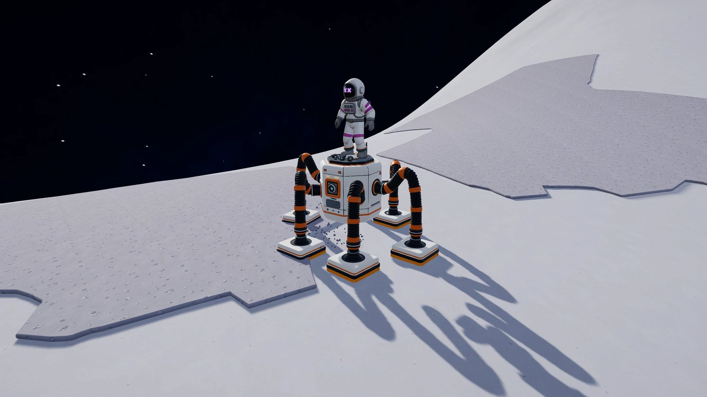

What it does
Mount and dismount
Look at a nearby J.O.O.N.A.S. and press E to climb on; E again to get off.
Surf or Tank
While riding, switch between standing on top and riding inside with your head out.
Camera
Cycle between first-person and third-person views while mounted.
Between rides and sessions
Your last Surf/Tank choice and camera view come back the next time you mount.
It still does its job
Riding doesn't change how a J.O.O.N.A.S. cleans, and you don't steer it: you're a passenger.
In-game, with LunarLink
It names its GitHub releases, so LunarLink's F9 UPDATES tab can install new versions.
Riding, at a glance
flowchart LR walk["On foot, near a
J.O.O.N.A.S."] -- "E" --> surf["Surf mode
standing on top"] surf -- "F" --> tank["Tank mode
head sticking out"] tank -- "F" --> surf surf -- "E" --> walk tank -- "E" --> walk surf -. "C: first / third person" .- surf
Install
Only you install it: it runs on your own game.
- Install BepInEx 6 and the Moon Sweepers patcherBepInEx 6.0.0-be.791 (Unity.IL2CPP, win-x64) and the MoonSweepers BepInEx Patcher; run the game once.
- Install MoonFrameworkJ.O.O.N.A.S. Joyride builds on it, like many Moon Sweepers mods.
- Download itFrom Nexus Mods or the latest GitHub release.
- Unzip it into the game folder, with the game closedYou get
BepInEx/plugins/JoonasJoyride/JoonasJoyride.dll. A mod manager such as Vortex does this for you. - Start the gameThe BepInEx log says "J.O.O.N.A.S. Joyride x.y.z loaded".
Settings
In your mod manager, or in BepInEx/config/tylerun.moonsweepers.joonaspassenger.cfg under [J.O.O.N.A.S. Joyride].
| Setting | Default | What it does |
|---|---|---|
Diagnostics | off | Verbose troubleshooting lines in the BepInEx log. Turn it on only while chasing a problem. |
On its own, or hot with LunarLink
J.O.O.N.A.S. Joyride runs on its own: a normal BepInEx plugin. With LunarLink, a free plugin that loads plugins from BepInEx/hot/, it reloads and updates while the game runs.
| On its own | With LunarLink | |
|---|---|---|
| Install it in | BepInEx/plugins/JoonasJoyride/ | BepInEx/hot/JoonasJoyride.dll (the DLL straight in, not in a subfolder) |
| Updating | Download, close the game, unzip, start again | F9 → UPDATES → Update: installed in place, no restart |
| Turning it off | Remove the DLL, restart | F9 → HOT PLUGINS → Disable: unloaded from memory at once |
Not in both folders: a plugin in both would load twice, so LunarLink refuses the hot copy. A new hot plugin starts off: turn it on in F9 → HOT PLUGINS → Enable.